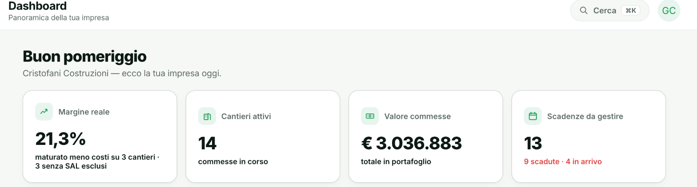

- Home
- Funzionalità
- Dashboard
Apri l'app. In 3 secondi sai tutto.
Margine aggregato, cantieri attivi, valore commesse, scadenze imminenti, andamento cassa: tutto in una schermata aggiornata in tempo reale.
- KPI principali in tempo reale
- Grafico andamento cassa
- Alert prioritari in evidenza
- Accesso rapido a tutte le sezioni

Non un riassunto. La vera dashboard, con i veri numeri.
Questa è la stessa schermata che vedi aprendo Aedify oggi, con dati reali di un'impresa che lo usa: nessun numero inventato per l'occasione.

Come è fatta, pannello per pannello.
Ogni numero qui sopra viene da un pannello preciso della dashboard. Ecco cosa mostra ognuno, e come viene calcolato.
Margine reale
21,3%
Non una stima: è il maturato meno i costi registrati, calcolato sui cantieri attivi (nell'esempio 3, uno escluso perché senza SAL). Lo stesso numero che vedi aprendo la scheda di ogni singolo cantiere, aggregato qui su tutta l'impresa.
Cantieri attivi e valore in portafoglio
14 cantieri · € 3.036.883
Quante commesse hai in corso in questo momento, e quanto valgono in totale tra cantieri aperti e preventivi firmati non ancora chiusi: il polso della pipeline senza aprire la sezione Cantieri.
Scadenze da gestire
13 · 9 scadute, 4 in arrivo
Il numero che più ti deve preoccupare la mattina: quante scadenze (DURC, POS, collaudi, revisioni mezzi) sono già scadute e quante arrivano a breve, su tutta l'impresa e tutti i cantieri insieme.
Andamento cassa
€ 142.923 di saldo
Un grafico con entrate, uscite e saldo mese per mese degli ultimi sei mesi, più la tabella con i numeri esatti sotto. Aedify segnala anche in automatico quando c'è un importo da pagare entro pochi giorni, o quando il margine di un cantiere scende sotto la soglia che hai impostato: qui sopra, ad esempio, un avviso per un pagamento da 53.764,30 € entro 7 giorni.
Scadenze dei prossimi 6 mesi
9 scadute · 4 in arrivo · 7 a posto
Un grafico mese per mese di quante scadenze arrivano, e un anello che riassume lo stato di tutte: scadute, in arrivo nei prossimi giorni, o già a posto. Se qualcuna viene saltata del tutto, un avviso rosso lo segnala subito invece di scoprirlo mesi dopo.
Risultato economico
€ 725.113 ricavi · € 229.578 risultato
Ricavi maturati (dai SAL registrati, 15 da gennaio nell'esempio), costi totali e il risultato che resta, con il confronto percentuale sui ricavi. Un dettaglio onesto che Aedify segnala da sola: finché non chiudi il mese, ore e mezzi non sono ancora costo, quindi il risultato del mese corrente è più alto del reale finché non lo consolidi.
Contabilità in sintesi
€ 79.428 da pagare · € 53.900 da incassare
Saldo di cassa, quanto devi ai fornitori, quanto devono i clienti, e quante fatture sono già oltre la scadenza (64 nell'esempio): il quadro di cosa entra e cosa esce senza aprire la Contabilità.
Attività recente
Aggiornato in continuo
Un feed delle ultime scadenze e documenti aggiornati, DURC di un subappaltatore, POS di un cantiere, un collaudo, una polizza, con la data di scadenza e quando è stato aggiornato: capisci subito cosa si è mosso senza dover ricostruire la situazione da zero.
Non un riassunto. Il punto di controllo di tutta l'impresa.
KPI, andamento cassa e alert prioritari, aggiornati in tempo reale da ogni altra sezione di Aedify.
KPI principali
I numeri che contano, in cima alla schermata.
Margine reale aggregato
Il margine medio su tutti i cantieri attivi, calcolato sui dati reali.
Cantieri attivi
Quante commesse sono in corso in questo momento.
Valore commesse
Il valore totale in portafoglio, tra cantieri attivi e preventivi firmati.
Scadenze da gestire
Quante scadenze sono scadute o in arrivo nei prossimi mesi.
Andamento cassa
La liquidità dell'impresa, mese per mese.
Grafico entrate e uscite
L'andamento degli ultimi mesi, a colpo d'occhio.
Pagamenti imminenti
Quanto c'è da pagare nei prossimi giorni, prima che diventi un'urgenza.
Alert e priorità
Quello che richiede la tua attenzione oggi, in cima a tutto il resto.
Scadenze saltate
Le scadenze che avresti dovuto gestire e non hai ancora chiuso.
Margini in calo
I cantieri che si stanno avvicinando alla soglia minima che hai impostato.
Vuoi vedere Dashboard in azione?
In 15 minuti ti mostriamo Aedify sul tuo caso concreto. Gratis, senza impegno.
- Gratis, senza impegno
- Solo 15 minuti
- Sul tuo caso concreto